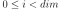
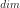
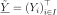
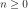

PosteriorRandomVector¶
-
class
PosteriorRandomVector(*args)¶ Random vectors based on samplers.
- Available constructors:
- PosteriorRandomVector(sampler)
Parameters: sampler :
SamplerA sampler.
See also
Notes
A PosteriorRandomVector corresponds to a random vector whose distribution poses some particular numerical difficulties such as evaluating its PDF, but which can be more easily sampled. By sampling a random vector, we means computing an i.i.d. sample according to its distribution or computing the realization of an ergodic Markov chain whose stationary distribution is the one of the random vector. Such random vector is typically encountered in Bayesian inference, where a common practice is to sample the posterior random vector of the infered parameters by Monte-Carlo Markov Chain.
Examples
>>> import openturns as ot >>> ot.RandomGenerator.SetSeed(0) >>> # observations >>> realDist = ot.Normal(31.0, 1.2) >>> data = realDist.getSample(10) >>> # proposal distribution >>> proposalColl = [ot.Uniform(-2.0, 2.0)]*2 >>> # prior distribution >>> prior = ot.ComposedDistribution([ot.Normal(25.0, 0.1), ot.Dirac(2.0)]) >>> # choose the initial state within the prior >>> initState = prior.getRealization() >>> # conditional distribution >>> cond = ot.Normal() >>> # create a metropolis-hastings sampler >>> sampler = ot.RandomWalkMetropolisHastings(prior, cond, data, initState, proposalColl) >>> sampler.setVerbose(True) >>> sampler.setThinning(10) >>> sampler.setBurnIn(100)
>>> # create a PosteriorRandomVector >>> randomVector = ot.PosteriorRandomVector(sampler) >>> # get a realization >>> print(randomVector.getRealization()) [25.0658,2]
Methods
getAntecedent()Accessor to the antecedent RandomVector in case of a composite RandomVector. getClassName()Accessor to the object’s name. getCovariance()Accessor to the covariance of the RandomVector. getDescription()Accessor to the description of the RandomVector. getDimension()Accessor to the dimension of the RandomVector. getDistribution()Accessor to the distribution of the RandomVector. getDomain()Get the domain failure. getFunction()Accessor to the Function in case of a composite RandomVector. getId()Accessor to the object’s id. getMarginal(*args)Get the random vector corresponding to the marginal component(s). getMean()Accessor to the mean of the RandomVector. getName()Accessor to the object’s name. getOperator()Accessor to the comparaison operator of the Event. getProcess()Get the stochastic process. getRealization()Compute one realization of the RandomVector. getSample(size)Compute realizations of the RandomVector. getSampler()Get the sampler. getShadowedId()Accessor to the object’s shadowed id. getThreshold()Accessor to the threshold of the Event. getVisibility()Accessor to the object’s visibility state. hasName()Test if the object is named. hasVisibleName()Test if the object has a distinguishable name. isComposite()Accessor to know if the RandomVector is a composite one. setDescription(description)Accessor to the description of the RandomVector. setName(name)Accessor to the object’s name. setShadowedId(id)Accessor to the object’s shadowed id. setVisibility(visible)Accessor to the object’s visibility state. -
__init__(*args)¶
-
getAntecedent()¶ Accessor to the antecedent RandomVector in case of a composite RandomVector.
Returns: antecedent :
RandomVectorAntecedent RandomVector in case of a
CompositeRandomVectorsuch as: .
-
getClassName()¶ Accessor to the object’s name.
Returns: class_name : str
The object class name (object.__class__.__name__).
-
getCovariance()¶ Accessor to the covariance of the RandomVector.
Returns: covariance :
CovarianceMatrixCovariance of the considered
UsualRandomVector.Examples
>>> import openturns as ot >>> distribution = ot.Normal([0.0, 0.5], [1.0, 1.5], ot.CorrelationMatrix(2)) >>> randomVector = ot.RandomVector(distribution) >>> ot.RandomGenerator.SetSeed(0) >>> print(randomVector.getCovariance()) [[ 1 0 ] [ 0 2.25 ]]
-
getDescription()¶ Accessor to the description of the RandomVector.
Returns: description :
DescriptionDescribes the components of the RandomVector.
-
getDimension()¶ Accessor to the dimension of the RandomVector.
Returns: dimension : positive int
Dimension of the RandomVector.
-
getDistribution()¶ Accessor to the distribution of the RandomVector.
Returns: distribution :
DistributionDistribution of the considered
UsualRandomVector.Examples
>>> import openturns as ot >>> distribution = ot.Normal([0.0, 0.0], [1.0, 1.0], ot.CorrelationMatrix(2)) >>> randomVector = ot.RandomVector(distribution) >>> ot.RandomGenerator.SetSeed(0) >>> print(randomVector.getDistribution()) Normal(mu = [0,0], sigma = [1,1], R = [[ 1 0 ] [ 0 1 ]])
-
getDomain()¶ Get the domain failure.
Returns: domain :
DomainDomain failure used to define the
Event.
-
getFunction()¶ Accessor to the Function in case of a composite RandomVector.
Returns: function :
FunctionFunction used to define a
CompositeRandomVectoras the image through this function of the antecedent : .
-
getId()¶ Accessor to the object’s id.
Returns: id : int
Internal unique identifier.
-
getMarginal(*args)¶ Get the random vector corresponding to the marginal component(s).
Parameters: i : int or list of ints, 
Indicates the component(s) concerned.  is the dimension of the RandomVector.
Returns: vector :
RandomVectorRandomVector restricted to the concerned components.
Notes
Let’s note a random vector and a set of indices. If is a
UsualRandomVector, the subvector is defined by . If is aCompositeRandomVector, defined by with , some scalar functions, the subvector is
.
some scalar functions, the subvector is
.Examples
>>> import openturns as ot >>> distribution = ot.Normal([0.0, 0.0], [1.0, 1.0], ot.CorrelationMatrix(2)) >>> randomVector = ot.RandomVector(distribution) >>> ot.RandomGenerator.SetSeed(0) >>> print(randomVector.getMarginal(1).getRealization()) [0.608202] >>> print(randomVector.getMarginal(1).getDistribution()) Normal(mu = 0, sigma = 1)
-
getMean()¶ Accessor to the mean of the RandomVector.
Returns: mean :
PointMean of the considered
UsualRandomVector.Examples
>>> import openturns as ot >>> distribution = ot.Normal([0.0, 0.5], [1.0, 1.5], ot.CorrelationMatrix(2)) >>> randomVector = ot.RandomVector(distribution) >>> ot.RandomGenerator.SetSeed(0) >>> print(randomVector.getMean()) [0,0.5]
-
getName()¶ Accessor to the object’s name.
Returns: name : str
The name of the object.
-
getOperator()¶ Accessor to the comparaison operator of the Event.
Returns: operator :
ComparisonOperatorComparaison operator used to define the
Event.
-
getProcess()¶ Get the stochastic process.
Returns: process :
ProcessStochastic process used to define the
Event.
-
getRealization()¶ Compute one realization of the RandomVector.
Returns: aRealization :
PointSequence of values randomly determined from the RandomVector definition. In the case of an event: one realization of the event (considered as a Bernoulli variable) which is a boolean value (1 for the realization of the event and 0 else).
See also
Examples
>>> import openturns as ot >>> distribution = ot.Normal([0.0, 0.0], [1.0, 1.0], ot.CorrelationMatrix(2)) >>> randomVector = ot.RandomVector(distribution) >>> ot.RandomGenerator.SetSeed(0) >>> print(randomVector.getRealization()) [0.608202,-1.26617] >>> print(randomVector.getRealization()) [-0.438266,1.20548]
-
getSample(size)¶ Compute realizations of the RandomVector.
Parameters: n : int, 
Number of realizations needed.
Returns: realizations :
Samplen sequences of values randomly determined from the RandomVector definition. In the case of an event: n realizations of the event (considered as a Bernoulli variable) which are boolean values (1 for the realization of the event and 0 else).
See also
Examples
>>> import openturns as ot >>> distribution = ot.Normal([0.0, 0.0], [1.0, 1.0], ot.CorrelationMatrix(2)) >>> randomVector = ot.RandomVector(distribution) >>> ot.RandomGenerator.SetSeed(0) >>> print(randomVector.getSample(3)) [ X0 X1 ] 0 : [ 0.608202 -1.26617 ] 1 : [ -0.438266 1.20548 ] 2 : [ -2.18139 0.350042 ]
-
getSampler()¶ Get the sampler.
Returns: sampler :
SamplerThe sampler used to create the RandomVector.
-
getShadowedId()¶ Accessor to the object’s shadowed id.
Returns: id : int
Internal unique identifier.
-
getThreshold()¶ Accessor to the threshold of the Event.
Returns: threshold : float
Threshold of the
Event.
-
getVisibility()¶ Accessor to the object’s visibility state.
Returns: visible : bool
Visibility flag.
-
hasName()¶ Test if the object is named.
Returns: hasName : bool
True if the name is not empty.
-
hasVisibleName()¶ Test if the object has a distinguishable name.
Returns: hasVisibleName : bool
True if the name is not empty and not the default one.
-
isComposite()¶ Accessor to know if the RandomVector is a composite one.
Returns: isComposite : bool
Indicates if the RandomVector is of type Composite or not.
-
setDescription(description)¶ Accessor to the description of the RandomVector.
Parameters: description : str or sequence of str
Describes the components of the RandomVector.
-
setName(name)¶ Accessor to the object’s name.
Parameters: name : str
The name of the object.
-
setShadowedId(id)¶ Accessor to the object’s shadowed id.
Parameters: id : int
Internal unique identifier.
-
setVisibility(visible)¶ Accessor to the object’s visibility state.
Parameters: visible : bool
Visibility flag.